2026+ · Submitted manuscript
Longitudinal associations of cigarette smoking, smoking intensity, and smoking trajectories with emergency room utilization among U.S. adults
Submitted to Nicotine & Tobacco Research
Biostatistics · Oncology · Machine Learning
Statistician, Oncology
University of Maryland Greenebaum Comprehensive Cancer Center
wanru.guo@som.umaryland.eduI am an oncology statistician at the University of Maryland Greenebaum Comprehensive Cancer Center. I develop statistical and machine learning methods for high-dimensional biomedical data and collaborate on translational and clinical oncology research. My work spans robust variable selection, causal machine learning, multi-omics transfer learning, real-world evidence, and survival analysis.
I earned an M.S. in Biostatistics from the University of Florida, where I received the Outstanding Achievement Award. Previously, I completed a fully funded thesis-based M.S. at McGill University as a Graduate Excellence Fellow and graduated with First Class Honours from the University of Queensland in Australia, where I received Dean's Commendations and a Chancellor's Scholarship.
2026+ · Submitted manuscript
Submitted to Nicotine & Tobacco Research
2026 · Journal abstract
Journal of Clinical Oncology, 44(16 Suppl), 8097
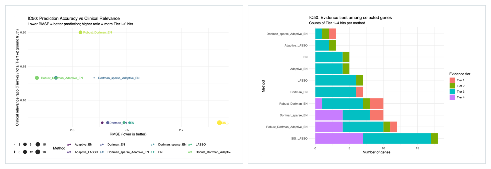
2026 · Journal abstract
Cancer Research, 86(7 Supplement), 6901
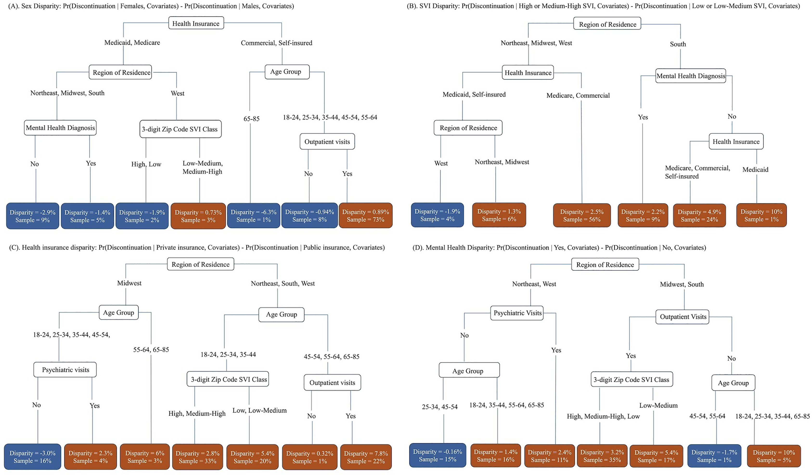
2026 · Journal article
PLOS Mental Health, 3(4), e0000469
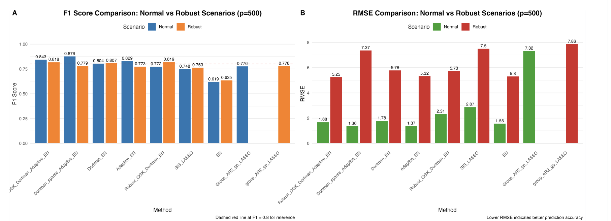
2026 · Preprint
arXiv preprint, 2602.07258
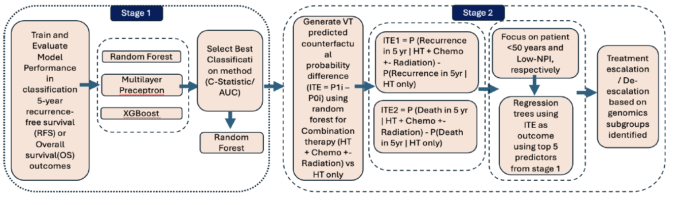
2025 · Conference abstract
Cancer Genetics, 298, S29
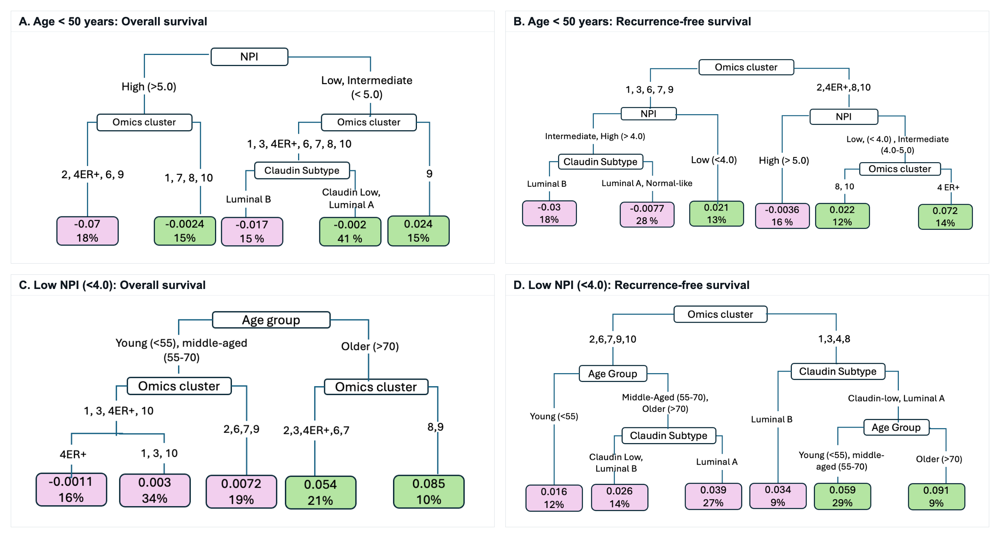
2026 · Conference abstract
Clinical Cancer Research, 32(4 Supplement), PS1-11-13
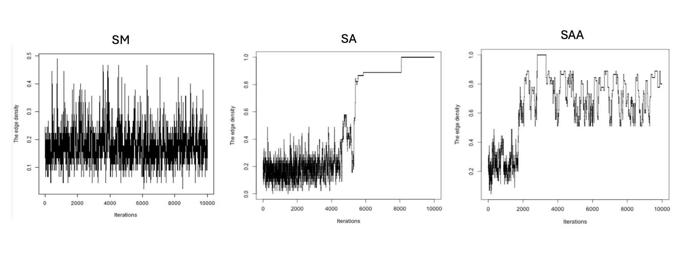
2024 · Preprint
arXiv preprint, 2405.11688
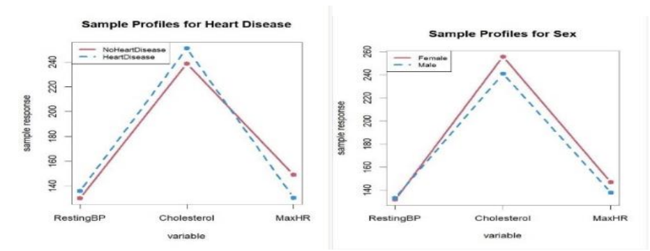
2024 · Preprint
medRxiv preprint
2023 · Journal article
Journal of Cutaneous Pathology, 50(5), 466-470
2022 · Journal article
Clinics in Dermatology, 41(1), 178-186
2022 · Journal article
Clinics in Dermatology, 40(6), 782-787
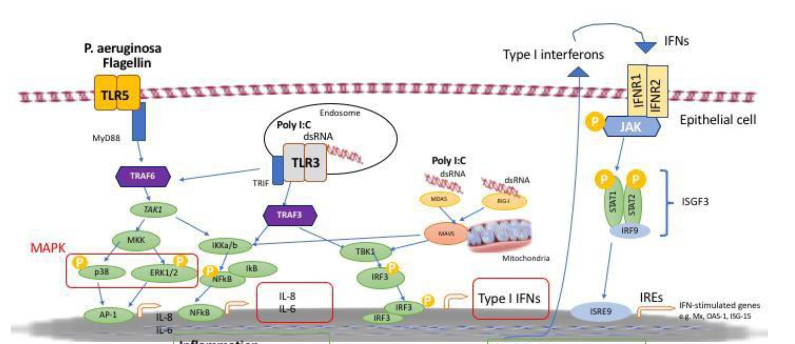
2020 · Journal abstract
American Journal of Respiratory and Critical Care Medicine, 201(Suppl 1), A7434
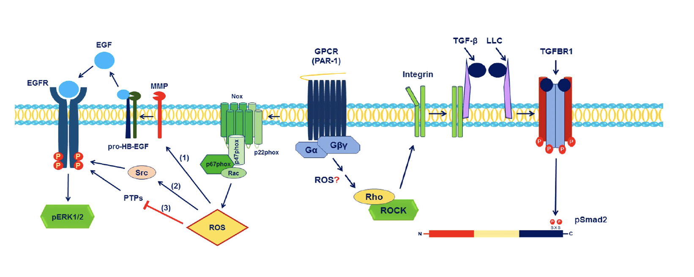
2019 · Journal article
Vascular Biology, 1(1)
2025
W. Guo · The University of Texas School of Public Health · ProQuest Dissertations & Theses, 32167590
2020
W. Guo · M.Sc. thesis · McGill University, Montreal, Canada
2026
W. Guo · Eastern North American Regional Conference · Indianapolis, Indiana
2025
W. Guo, C. Tatsuoka · The Symposium on Clinical Interventional Oncology (CIO) · October 17-19, 2025 · Miami Beach, Florida
2024
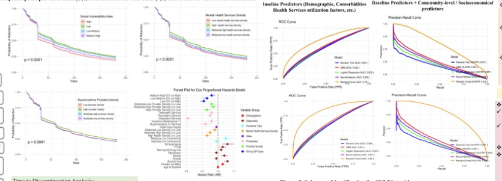
W. Guo, P. J. Buitron, Y. Gong, Y. Guo, C. V. Valencia, C. X. Bauer · A Special Conference in the Era of Data-Driven Sciences · Houston, Texas
2024
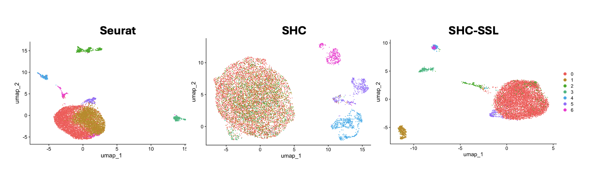
W. Guo, X. Li, A. Korkut · Research in Computational Molecular Biology · Cambridge, Massachusetts
2018
W. Guo, S. Rousseau · Journées Québécoises en Santé Respiratoire · Montreal, Quebec, Canada
2017
W. Guo, Z. Xu, P. M. Moyle · Immunotherapy@Brisbane · Brisbane, Queensland, Australia
2017
W. Guo, Z. Xu, P. M. Moyle · Asia Pacific Biotechnology Conference · Melbourne, Victoria, Australia
2026
W. Guo · Western North American Regional Conference · Pullman, Washington
2025
W. Guo, P. J. Buitron, Y. Gong, Y. Guo, C. V. Valencia, C. X. Bauer · HACASA · Houston, Texas